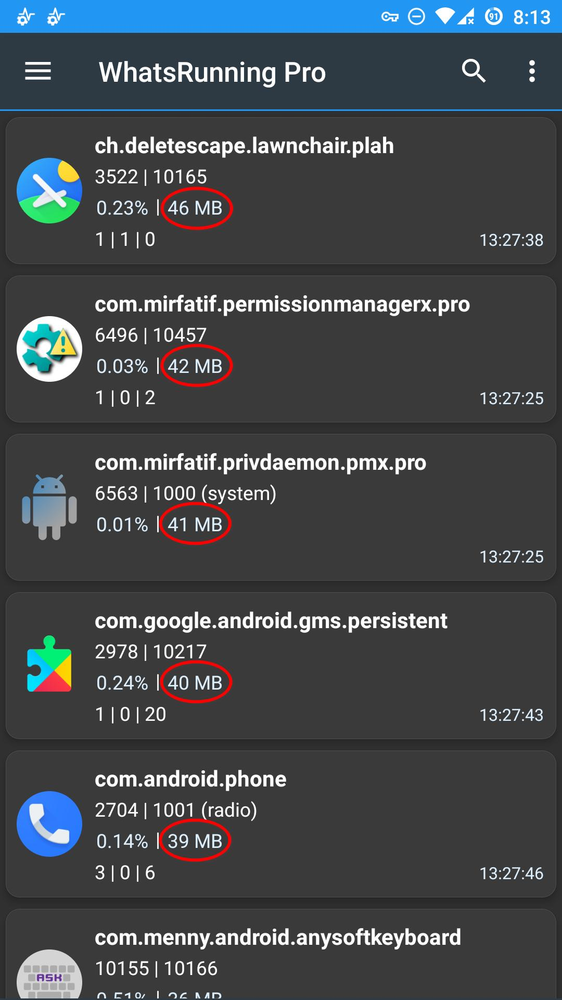
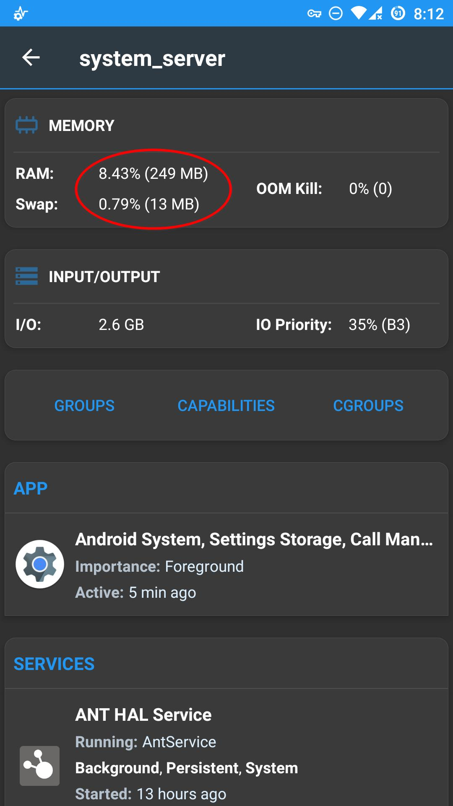

How to view RAM and swap usage on Android?
Android offers some native methods to check memory usage of apps. You'll find Memory and Running Services sections in Developer Options. But these methods don't give a complete breakdown of RAM usage.
Note that apps are not the only processes running on Android devices. There are also hundreds of other processes always running in background. But Android doesn't show us how much RAM is consumed by these processes which is usually not negligible; sometimes taking up to one-fourth of the total RAM on some ROMs. So the partial details about RAM usage aren't satisfactory.
I faced this situation for years, and then I came up with a solution of my own: WhatsRunning. It's a small, harmless, privacy-friendly, very powerful app which shows an overall state of the device (current and historical), which includes a complete breakdown of RAM and swap on per process basis - be it a user app, a system app, a native service, a framework service process, or a random process started by a malfunctioning app. This gives a more comprehensive broader picture of RAM usage on devices.
 Process list can be sorted by "Memory" to find the processes with high RAM and swap usage easily.
In this way we get the instantaneous memory usage of a process / app. But if we want to find out the average memory usage of a process in e.g. 24 hours, or if we want to track the RAM usage of a process which is frequently killed and restarted, the app offers Process Watcher feature.
And here we have a complete breakdown of total RAM and swap. This can also be viewed using dumpsys meminfo. But WhatsRunning presents it in a more elegant and comprehensive way:
Active Apps
Apps which are currently in use; either by the user or running a background service.
Other Processes
Non-app processes running continuously in background. Most of these are system (init) services.
See How to view background services running on Android? for more details.Kernel
The core operating system.
zRAM
It's the compressed backend used for swap.
See What's the purpose of swap and zRAM on Android? for more details.Sparable
It's the amount of RAM which is currently in use but is spared automatically when an app needs more RAM.
Cached Apps
Apps which are not being used but kept in RAM so that they can be resumed quickly.
See Why does Android OS use so much RAM? for more details.Cached zRAM
zRAM used by the cached apps.
Kernel Cache
RAM temporarily used by the operating system e.g. to hold opened files.
Related: